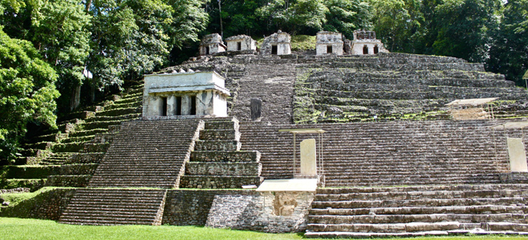
Drug and human trafficking are facts of life along the Mexico / Guatemala border and we were advised to be off the road by dusk and, in fact, no public transport ever runs after dark. During the day we struggled, but succeeded, in getting to Bonampak (Ocosingo) - renowned for its vivid frescoes which really brought the Mayan world to life. We were transported into the site by two Jesus-attired drivers whose van windscreen was a miracle in itself.
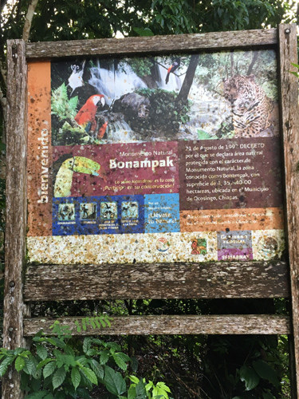
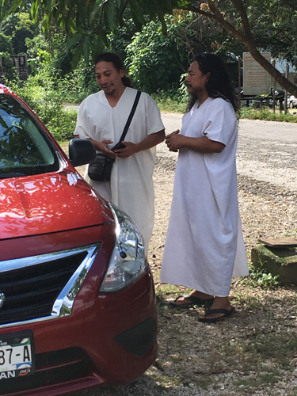
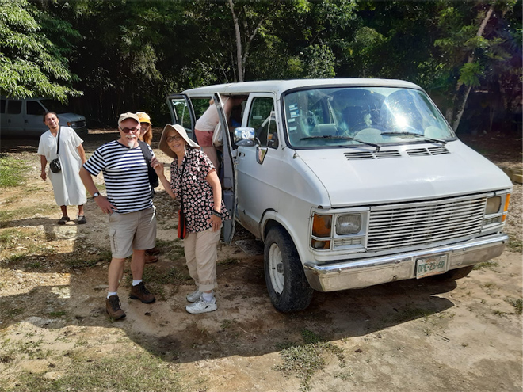
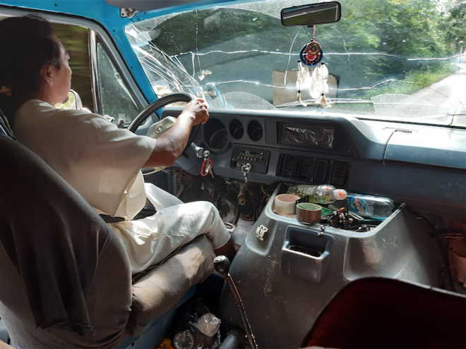
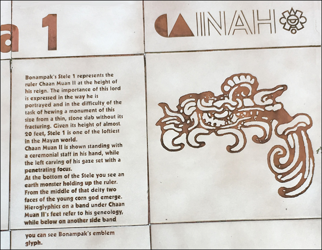
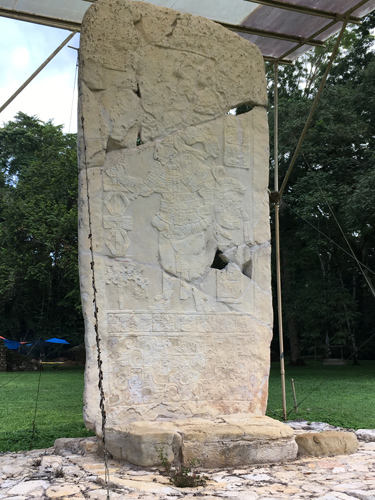
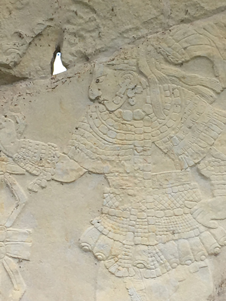
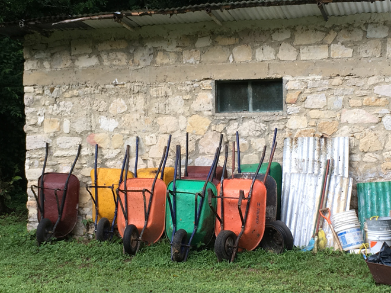
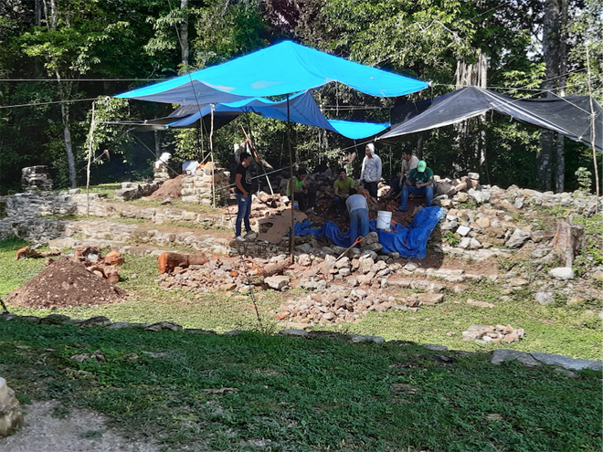
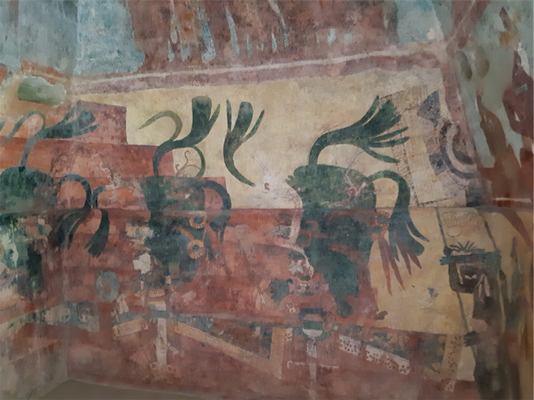
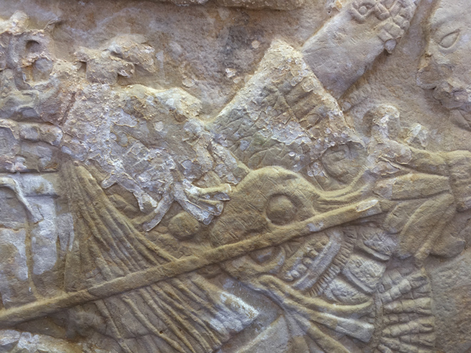
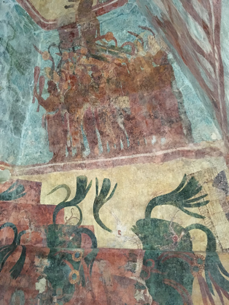
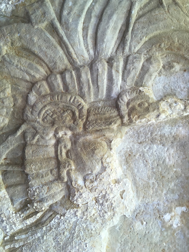
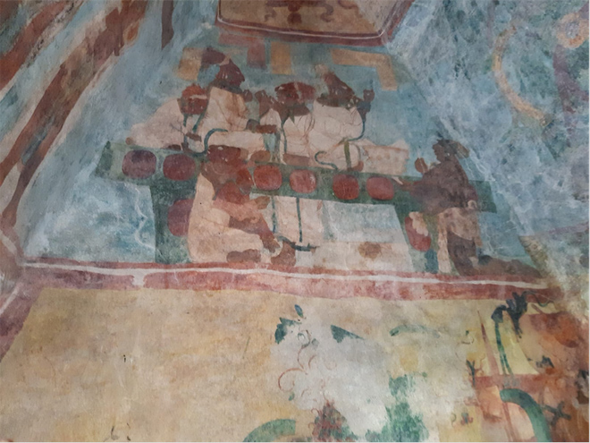
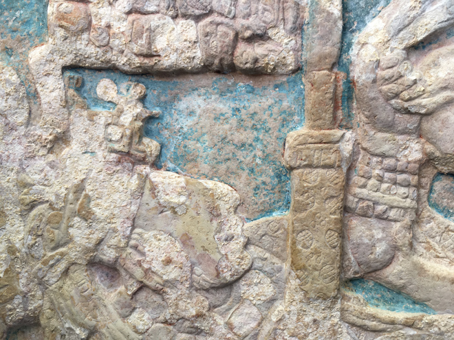
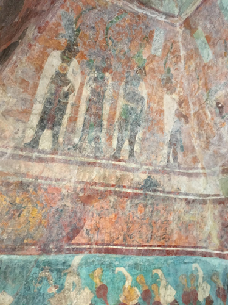
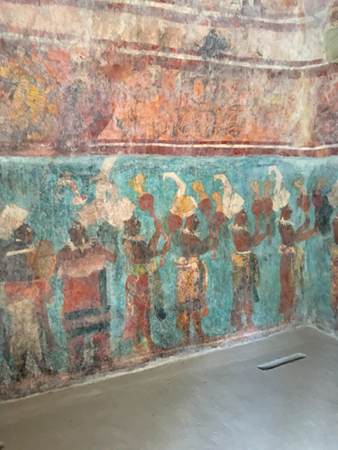
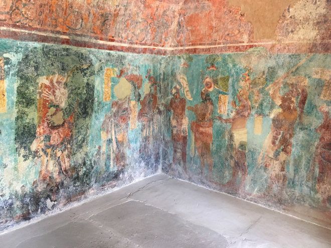
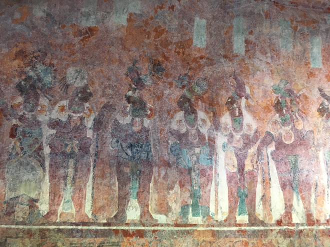
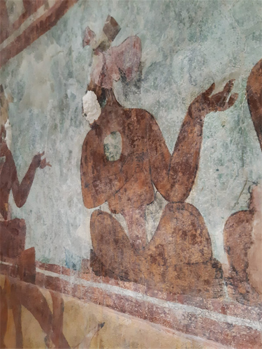
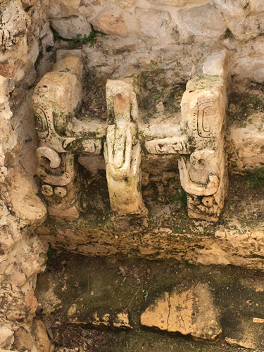
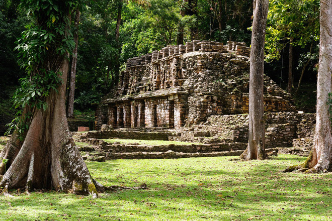
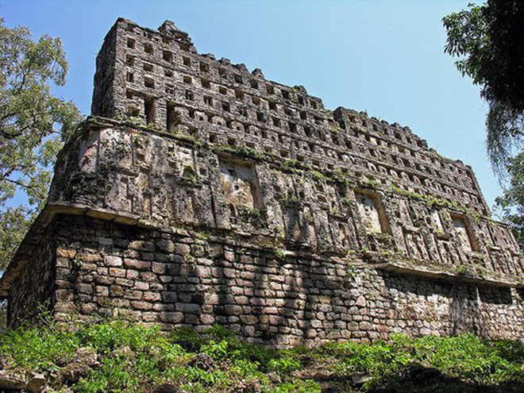
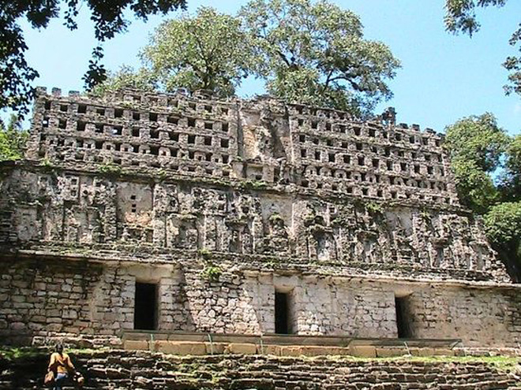
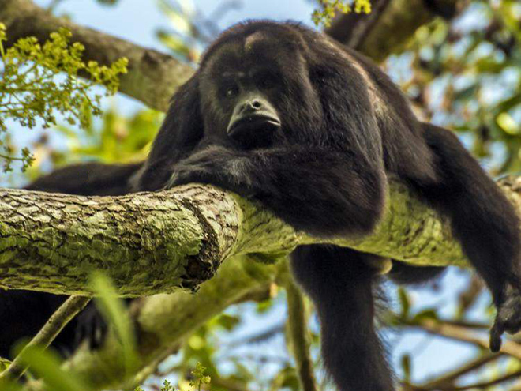
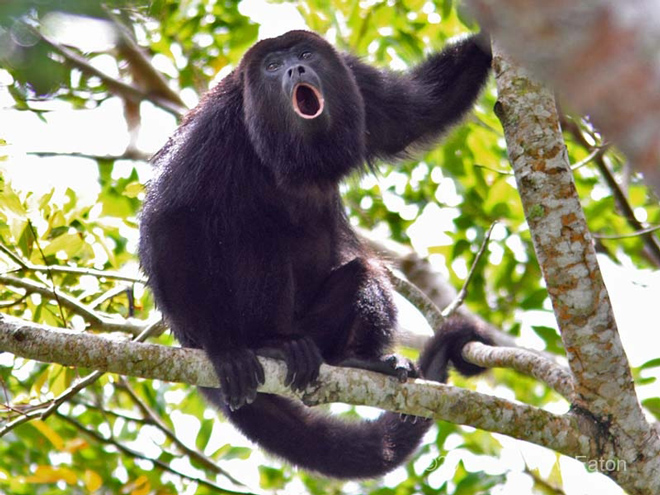
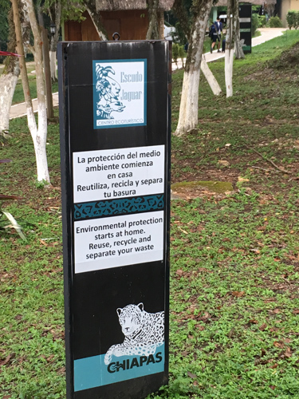
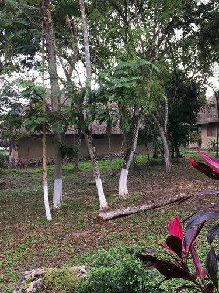
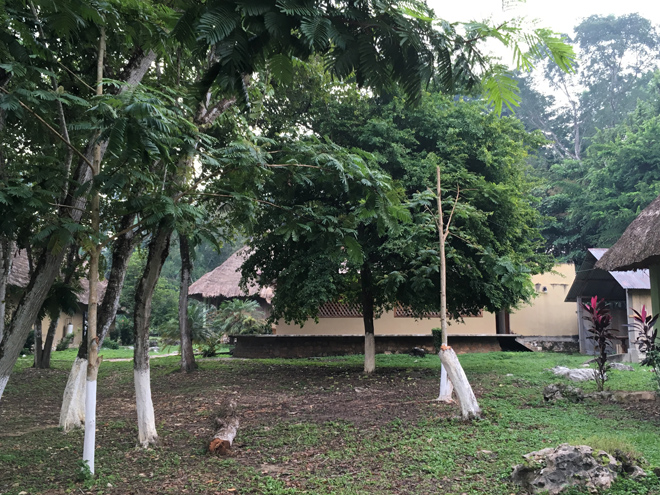
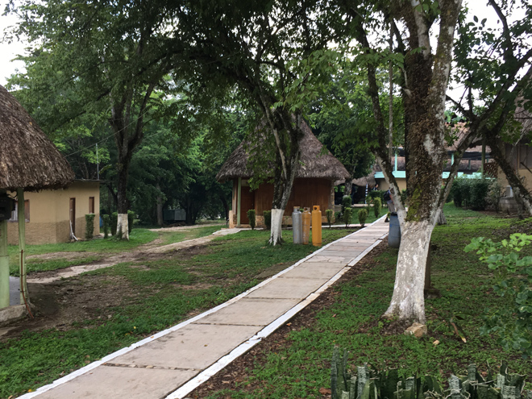
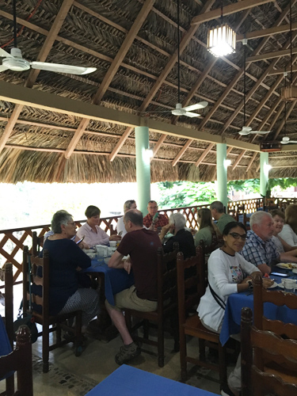
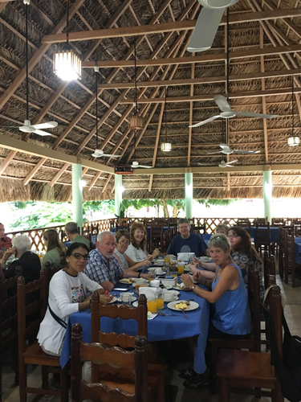
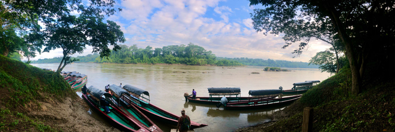